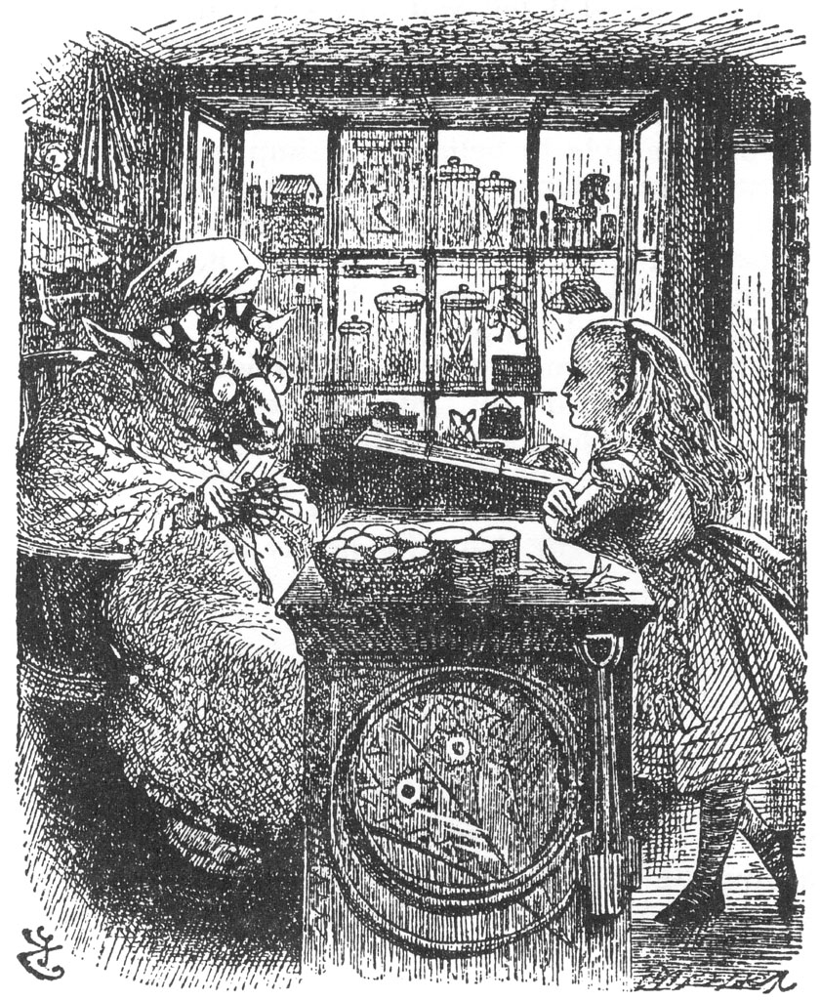
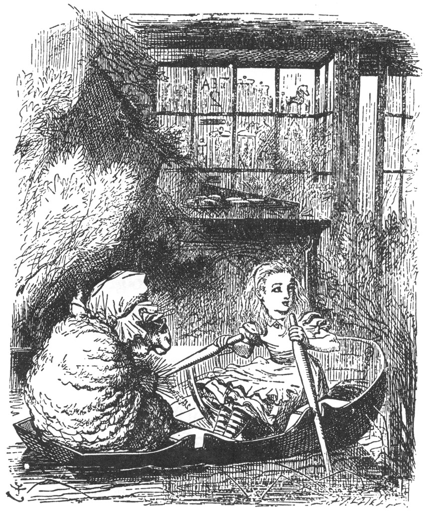

Alice, bir yandan konuşurken bir yandan da şalı yakalayıp sahibini bulmak üzere etrafına bakındı; biraz sonra Beyaz Kraliçe, uçarcasına iki kolunu iki yana aça aça korunun içinden koşarak geldi; Alice de elindeki şalla kibar bir şekilde onu karşılamaya gitti.
“Tesadüfen buralarda olduğum için çok mutluyum,” dedi Alice, şalını yeniden takması için Kraliçe'ye yardım ettiği sırada.
Beyaz Kraliçe dönüp çaresiz bir şekilde ürkek ürkek baktı ona; ağzında sanki “ekmek... tereyağı, ekmek... tereyağı,” gibi bir şeyler geveleyip duruyordu. Alice şayet aralarında bir konuşma geçecekse bunu kendisinin başlatabilmesi gerektiğini anlamıştı. Böylece çekine çekine “Beyaz Kraliçe ile mi konuşuyorum acaba?” dedi.
“Şey, evet, tabii buna kuşanma denirse. Benim giyinip kuşanma tarzım bu değil aslında.”
Alice daha konuşmalarının başında tartışmanın yakışık almayacağını düşünüp gülümseyerek, “Eğer Majesteleri konuşmaya nasıl yeniden başlamam gerektiğini lütfedip söylerlerse, ben de elimden geldiğince öyle başlarım,” dedi.
“Ama ben baştan başlamak istemiyorum ki,” diye oflayıp püfledi zavallı Kraliçe. “İki saattir durmadan giyinip kuşanıyorum.”
Alice'e öyle geliyordu ki, giyinip kuşanması konusunda birileri Kraliçe’ye yardım etse gerçekten çok iyi olacaktı, öyle hırpani bir giyimi vardı ki. “Üzerindeki her şey çarpık çurpuk,” diye düşündü Alice, “baştan ayağı her tarafı iğnelerle tutturulmuş!”... “Şalınızı birazcık düzelteyim mi?” diye yüksek sesle sordu Alice.
“Şalıma da ne oluyor sanki, bir türlü anlamıyorum!” dedi Kraliçe üzgün bir ses tonuyla.
“Huysuzluğu üzerinde olsa gerek. Şurasını iğneyle tutturdum, burasını iğneyle tutturdum, ama onu memnun etmek ne mümkün!”
“Şey, hep sadece bir tarafını tutturursanız, düzgün durması pek mümkün değil,” dedi Alice, Kraliçe’nin şalını nazikçe düzeltirken. “Aman Tanrım, saçlarınız ne halde böyle.”
“Saçlarım fırçaya dolaştı!” dedi Kraliçe içini çekerek. “Tarağımı da dün kaybettim.”
Alice, Kraliçe’nin saçlarını dikkatlice fırçadan kurtardı ve elinden geldiğince düzeltmeye çalıştı. “Bakın, şimdi gayet iyi görünüyorsunuz,” dedi, toplu iğnelerin çoğunun yerini değiştirdikten sonra. “Ama aslında bir nedimeniz olmalı!”
“Seni büyük bir zevkle nedime olarak alırım!” dedi Kraliçe.
“Haftada iki peni, gün aşırı da reçel.”
“Beni işe almanızı istemiyorum... Reçeliniz de hiç umurumda değil,” dedi Alice, bir yandan da gülmekten kendini alıkoyamıyordu. ”Çok güzel bir reçel,” dedi Kraliçe.
“Peki, neyse bugün hiçbir şekilde istemiyorum,” dedi.
“İstesen bile yiyemezsin,” dedi Kraliçe. “Kuralımız şu: Yarın reçel, dün reçel, ama bugün reçel yok.”
“Eninde sonunda ‘bugün için de reçel’ olmalı,” diye itiraz etti Alice.
“Hayır, olamaz,” dedi Kraliçe. “Reçel hep gün aşırı verilir. Gördüğün gibi bugün de hâlâ bugün, aşmadık yani.”
“Sizi hiç anlayamıyorum,” dedi Alice. “Nasıl da karışık bir şey bu!”
“Geriye doğru yaşamanın bir sonucu,” dedi Kraliçe kibarca. “İnsanı ilk başta birazcık sersemletir...”
“Geriye doğru yaşamak mı?” diye tekrarladı Alice büyük bir şaşkınlık içinde. “Böyle bir şey hayatımda hiç duymadım!”
“... ama böyle yaşamanın çok büyük bir faydası var; insanın belleği iki yönlü çalışır.”
“Benimkisi kesinlikle tek yönde çalışıyor,” diye belirtti Alice. “Henüz gerçekleşmemiş şeyleri hatırlayamam.”
“Sadece geriye doğru işleyen bir bellek zayıf bir bellektir,” dedi Kraliçe.
“Siz, en iyi ne türden şeyleri anımsıyorsunuz?” diye sormaya kalkıştı Alice.
“Aa, gelecek iki hafta içinde gerçekleşen olayları anımsarım,” diye yanıtladı Kraliçe kayıtsız bir şekilde. “Örneğin şimdi,” diye devam etti Kraliçe, bir taraftan da parmağına kocaman bir yara bandı yapıştırıyordu, “Kral’ın bir Ulak’ı var. Şimdi hapiste cezalandırılıyor, dava da gelecek çarşambaya kadar ancak başlar: Tabii ki suç hepsinin sonunda gelir.”
“Peki ya suçsuzsa?” diye sordu Alice.
“Bu çok iyi olurdu, öyle değil mi?” dedi Kraliçe, bir yandan da bir parça kurdeleyi bandın üzerinden parmağına doluyordu.
Alice’in buna itirazı yoktu. “Tabii ki daha iyi olurdu,” dedi, “ama cezalandırılması hiç de iyi bir şey değil.”
“Ama, işte burada yanılıyorsun,” dedi Kraliçe. “Sen hiç ömründe ceza aldın mı?”
“Sadece hata yaptığımda,” dedi Alice.
“Bu daha da güzel ya,” dedi Kraliçe zafer kazanmışçasına.
“Evet, ama o zaman hatalarım yüzünden cezalandırılmıştım,” dedi Alice, “bu her şeyi değiştirir.”
“Ama bu hataları yapmamış olsaydın,” dedi Kraliçe, “çok daha iyi olabilirdi, çok daha iyi, çok daha iyi, çok daha iyi!” Kraliçe’nin sesi her seferinde biraz daha tizleşerek en sonunda ciyaklamaya dönmüştü.
Alice tam, “Bir yerde bir hata var,” demeye başlamıştı ki, birden Kraliçe bir çığlık kopardı, öyle bağırıyordu ki, Alice cümlesini yarıda bırakmak zorunda kaldı. Sanki elinden kurtulmak istercesine, elini sallayarak, “Ah, ah, ah!” diye avazı çıktığınca bağırıyordu. ”Parmağım kanıyor! Ah, ah, ah!”
Çığlıkları, bir buharlı trenin ıslığına öylesine benziyordu ki, Alice elleriyle kulaklarını tıkamak zorunda kaldı.
“Ne oldu?” diye sordu Alice, sesini duyurma fırsatını ilk bulduğu anda. “Parmağınıza iğne mi batırdınız?”
“Daha batırmadım,” dedi Kraliçe, “ama batıracağım çok yakında... ah, ah, ah!”
“Ne zaman olacak dersiniz?” diye sordu Alice içinde kabaran gülme isteğiyle.
“Şalımı bir daha tutturduğum zaman,” dedi zavallı Kraliçe ahlayıp vahlayarak. “Broş kendiliğinden açılacak. Ah, ah!” Bu sözler ağzından çıktığı anda, broş birden çözüldü; Kraliçe hiddetle broşu avuçlayıp iğnesini tekrar kapatmaya çalıştı.
“Dikkat edin!” diye bağırdı Alice, “Ters tutuyorsunuz!” Ve broşu yakalamaya çalıştı; ama çok geçti; iğne kayıp Kraliçe’nin parmağına batmıştı.
“İşte bu kanın nedenini açıklıyor, görüyorsun,” dedi Kraliçe Ali-ce’e dönüp gülümseyerek. “Şimdi artık burada olaylar nasıl gerçekleşiyor anlamışsındır.”
“Peki, şimdi neden çığlık atmıyorsunuz?” dedi Alice, her an kulaklarını kapamak üzere ellerini hazır tutarak.
“Eh, zaten çığlık atmıştım!” dedi Kraliçe. “Yeniden çığlık atmanın ne yararı olacak ki?”
Bu arada hava aydınlanıyordu. “Karga artık uçup gitmiş olmalı,” dedi Alice. “Gittiğine o kadar memnunum ki. Gece oluyor sanmıştım.”
“Keşke ben de memnun olabilseydim!” dedi Kraliçe. “Kural neydi bir anımsayabilsem. Bu koruda yaşamaktan ve dilediğinde memnun olmaktan mutlu olmalısın!”
“Bir de burası bu kadar ıssız olmasa!” dedi Alice hüzünlü bir ses tonuyla; yalnızlığı aklına gelir gelmez de kocaman iki damla gözyaşı yanaklarından aşağı süzülmeye başladı.
“Ah, yapma böyle!” diye çığlık kopardı zavallı Kraliçe, çaresizlikten ellerini ovuşturarak. “Ne müthiş bir kız olduğunu düşün. Bugün ne uzun bir yol kat ettiğini düşün. Saatin kaç olduğunu düşün. Ne istersen onu düşün, yeter ki ağlama!”
Alice, gözyaşları içinde bile bu söylenenlere gülmeden edemedi. “Bir şeyler düşünerek siz ağlamanızı durdurabiliyor musunuz?” diye sordu.
“Bunun tek çaresi bu,” dedi Kraliçe kararlılıkla. “Bilirsin, hiç kimse aynı anda iki şeyi birden yapamaz. Gel senin yaşını düşünmekle başlayalım... Kaç yaşındasın?”
“Aslına bakarsanız tam yedi buçuk yaşındayım.”
“Aslına bakmama hiç gerek yok,” diye belirtti Kraliçe. “Bakma-sam da inanırdım. Şimdi ben de sana inanasın diye bir şey söyleyeceğim. Ben tam yüz bir yıl, beş ay, bir gün önce doğdum.”
“Buna inanamam!” dedi Alice.
“İnanamaz mısın?” dedi Kraliçe ona acıyarak. “Bir daha inanmayı dene, derin derin nefes al ve gözlerini kapa.”
Alice kahkahalarla güldü. “Böyle yapmanın hiçbir faydası yok,” dedi. “İnsan imkânsız şeylere inanamaz.”
“Öyle sanıyorum ki senin bu konuda çok fazla inanma denemen olmamış,” dedi Kraliçe. “Ben senin yaşındayken her gün yarım saat inanma denemesi yapardım. Yaa! Bazen kahvaltıdan önce altı tane imkânsız şeye inandığım olurdu. İşte şal yine uçuyor!”
Kraliçe konuşurken birden broşu açıldı ve ani bir rüzgâr esintisi şalını alıp küçük çaylardan birinin öte yakasına savurdu. Kraliçe yeniden kollarını açıp uçarak şalın ardından gitti ve bu sefer şalını kendi başına yakalamayı başardı. “İşte seni yakaladım!” diye zafer kazanmışçasına çığlık attı. “Şimdi onu nasıl iğnelediğimi göreceksin, hem de tek başıma!”
“Öyleyse parmağınız iyileşme yolunda, öyle mi?” dedi Alice kibarca, Kraliçe’nin ardından o minik çayı geçtiği sırada.
* * *
“Ah, başladı iyileşmeye! Daha iyice!” diye bağırdı Kraliçe, sesi gittikçe yükselip tizleşiyordu, “iyileş-me! İyi-leş-mee! İyi-leş-meeee!” Son söylediği bir koyunun melemesini o kadar çok andırıyordu ki, Alice bir an irkildi.
Bir anda sanki kendini yünlere sarıp sarmalamış gibi görünen Kraliçe’ye baktı. Gözlerini ovuşturup yeniden baktı. O an ne olduğunu anlayamadı. Bir dükkânda mıydı ne? Ve şu tezgahın... şu tezgahın karşısında oturan da gerçekten bir koyun muydu yoksa? Alice gözlerini ovuşturup duruyordu, ama bu olup bitenlere hiçbir anlam veremiyordu: Küçücük, karanlık bir dükkandaydı, dirseklerini tezgaha dayamıştı, karşısında yaşlı bir Koyun duruyordu, koltuğunda oturmuş örgüsünü örüyor, ara sıra işini bırakıp kocaman gözlüklerinin arkasından Alice'e bakıyordu.

“Ne istiyorsun?” dedi Koyun sonunda, örgüsünden başını kaldırıp ona bakarak.
“Daha tam bilmiyorum,” dedi Alice nazikçe. “Eğer mümkünse önce dört bir yanıma iyice bakmak istiyorum.”
“Önüne bakabilirsin, iki yanına da bakabilirsin,” dedi Koyun. “Ama başının arkasında gözlerin olmadığı için... dört bir yanına bakamazsın.”
Doğal olarak, Alice’in de başının arkasında gözleri yoktu; bu yüzden raflara yaklaştığı sırada onlara dönerek bakmakla yetindi.
Dükkan, her türden acayip eşyalarla dolu bir yere benziyordu... ama işin en tuhaf yanı da bir şeyin tam olarak ne olduğunu anlamak için ne zaman bir rafa yaklaşacak olsa, o raf her seferinde bomboş oluyor, ama onun etrafındaki raflarsa tıka basa dolu oluyordu.
Alice, kimi zaman bir oyuncak bebeğe kimi zaman da bir alet kutusuna benzettiği ve her seferinde baktığı rafın hep bir üstünde yer alan kocaman parlak bir şeyin peşinden boşu boşuna birkaç dakika koştuktan sonra, “Burada her şey uçuyor!” dedi yakına yakına. “İnsanı en cezbedeni de işte şu... ama ben sana ne yapacağımı biliyorum,” dedi kafasında bir anda şimşekler çakarken. “En üstteki rafa kadar onu kovalayacağım. Umarım beni şaşırtır da tavandan dışarı çıkmaz!”
Ne var ki bu plan da işe yaramadı, ‘o şey’ sanki çok alışkınmışçasına sessiz sedasız tavandan çıkıp gitti.
“Sen çocuk musun yoksa topaç mı?” diye sordu Koyun, yeni bir çift şiş aldığı sırada. “Etrafta böyle dönüp duracak olursan, çok geçmeden başımı döndüreceksin.” Koyun, artık şimdi aynı anda on dört çift şişle örüyordu; Alice hayretler içinde elinde olmadan ona bakakalmıştı.
“Bu kadar çok şişle nasıl örebiliyor?” diye sordu kendine kafası allak bullak olan çocuk. “Her geçen dakika biraz daha oklu kirpiye benziyor.”
“Kürek çekebilir misin?” diye sordu Koyun, bir taraftan da Ali-ce’e bir çift şiş uzatıyordu.
Alice, tam “Evet birazcık... ama karada değil... şişlerle de değil...” diye sözlerine başlamak üzereydi ki, birden elindeki şişler küreğe dönüştü, bir de baktı ki küçücük bir sandalın içindeler ve iki kıyı arasında süzülüp duruyorlar, artık elinden geldiğince kürekleri çekmekten başka yapacak bir şeyi yoktu.
“Kuş tüyü!” diye bağırdı Koyun, yeni bir çift şiş aldığı sırada.
Bu karşılık vermeye değer bir söz gibi pek durmuyordu, bu yüzden Alice bir şey söylemeyip kürekleri çekmeye devam etti.
Suyla ilgili tuhaf bir durum var, diye aklından geçiriyordu, çünkü kürekler yer yer sıkışıyor, sonra da zar zor çıkıyordu.
“Tüy! Tüy!” diye bağırdı Koyun, eline daha fazla şiş alarak. “Şimdi bir yengeç yakalamak üzeresin.”
“Sevimli minik bir yengeç,” diye düşündü Alice. “Bunu isterdim doğrusu.”
“‘Tüy’ dediğimi duymadın mı?” diye öfkeli öfkeli bağırdı Koyun, eline bir deste şiş daha alarak.
“Duydum aslında,” dedi Alice. “Bunu sık sık söylüyorsun... ve de bağırarak söylüyorsun. Lütfen söyle, yengeçler nerede?”
“Tabii ki suda!” dedi Koyun, şişlerden bazılarını elleri dolu olduğundan saçlarına sokarken, “Tüy diyorum!”
“Niye ‘Tüy’ deyip duruyorsun?” diye sordu Alice en sonunda canı oldukça sıkılmış olarak. “Ben kuş değilim ki!”
“Kuşsun,” dedi Koyun. “Sen küçük bir kazsın.”
Bu sözler Alice’i biraz gücendirmişti; bu yüzden bir iki dakika hiç konuşmadılar. Bu arada sandalları kimi yosun yataklarının içinden (bu durum da kürekleri öncekinden çok daha fena suya batırıyordu), kimi de ağaçların altından usulca süzüle süzele gidiyordu; fakat çayın o yüksek kıyıları karşılarında öylece durup içlerini karartıyordu.
“Ah, lütfen! Burada çok güzel kokulu sazlar var!” diye birden sevinçle bağırdı. “Gerçekten varmış... Ne kadarda güzeller!” ”Onlarla ilgili olarak bana ‘lütfen’ demene hiç gerek yok,” dedi Koyun başını örgüsünden kaldırmadan. “Onları oraya ben koymadım, onları oradan alıp götürmeyeceğim de.”
“Yok, ben demek istedim ki... Lütfen durup biraz saz toplayalım mı,” dedi Alice. “Sandalı birazcık durdurmanın sizce bir sakıncası var mı?”
“Ben nasıl durdurayım?” dedi Koyun. “Sen kürek çekmeyi bırakırsan o da durmuş olacak.”

Böylece sandal, sonunda rüzgârla sallanan sazların arasına usulca girinceye değin çaydan aşağıya öylece akıntıya bırakıldı. Ardından o minik elbisenin kolları dikkatlice kıvrıldı ve o minik kollar, kıracağı sazlar daha uzun olsun diye dirseğe kadar suya sokuldu; Alice, dağınık saçlarının uçları suya girerek, salın kenarından suya eğilirken bir süreliğine Koyunu da örgüsünü de unutuver-mişti... ışıl ışıl hevesli gözleriyle o canım kokulu sazlara ulaşıp demet demet koparmanın peşindeydi.
“Tek dileğim sandalın devrilmemesi,” dedi kendi kendine. “Ah şu ne tatlı! Bir de ulaşabilsem.” Gerçekten de insanı biraz baştan çıkaran bir yönü vardı bu işin (‘sanki bile bile yapılıyor bunlar,’ diye aklından geçirdi) öyle ki sandal süzülüp giderken, aslında bir sürü güzel saz koparmış olsa da, ulaşamadığı daha güzel bir tanesi oluyordu hep.
“En güzelleri hep en uzaktadır!” dedi Alice en sonunda, sazların bu kadar uzaklarda büyüme inatlarına karşılık içini çekerek. Kıpkırmızı yanakları, şapır şapır su damlayan saçları ve elleriyle güçlükle doğrulup tekrar yerine geçti ve bulduğu hâzinelerini düzenlemeye koyuldu.
Daha kopardığı andan itibaren sazların solmaya, bütün kokularını ve güzelliklerini kaybetmeye başlamalarının o sırada Alice için ne önemi vardı ki? Hani bilirsiniz gerçek kokulu sazlar bile çok az dayanır... bunlar da düş sazlar olduğundan ayaklarının altında yığın halinde tıpkı kar gibi eriyip gidiyorlardı... ne ki daha düşünecek o kadar çok tuhaf şey vardı ki Alice bunu pek fark etmedi.
Henüz oradan çok fazla uzaklaşmamalardı ki, küreklerden bir tanesinin palası suya saplandı ve bir daha da çıkmadı (Alice’in daha sonra anlattıklarına göre), küreğin sapı çenesinin altına girdi ve zavallı Alice'in çıkardığı bir dizi küçük “Ah! Ah! Ah!” çığlığına karşın, sap Alice’i yerinden alıp aşağıdaki saz yığınının arasına fırlatıverdi.
Ne var ki Alice’in canı hiç acımadı ve hemen yukarı çıktı; bütün bunlar olagelirken Koyun sanki hiçbir şey olmamışçasına örgüsüne devam ediyordu. “Çok güzel bir yengeç yakaladın!” dedi Koyun, Alice tekrar yerine geçip de, kendini hâlâ sandalda bulmanın verdiği ferahlık içindeyken.
“Öyle mi? Yengeci görmedim,” dedi Alice, sandalın kenarından aşağıya kapkaranlık suya dikkatlice bakarken. “Keşke kaçma-saydı... Eve giderken minik bir yengeci de yanımda götürmeyi nasıl da isterdim!” Fakat Koyun sadece aşağılaya aşağılaya ona bakıp gülerek örgüsüne devam etti.
“Burada çok yengeç var mı?” diye sordu Alice.
“Yengeçle beraber daha bir sürü şey var,” dedi Koyun. “Seçenek çok, sen yeter ki kararını ver. Şimdi söyle bakalım, ne almak istiyorsun?”
“Almak mı!” diye tekrarladı Alice, sesinde hem korku hem de şaşkınlık vardı... çünkü kürekler, sandal ve çay hepsi bir anda yok olmuştu ve Alice yeniden o küçücük karanlık dükkandaydı.
“Bir yumurta alabilir miyim, lütfen,” dedi ürke ürke. “Kaça satıyorsunuz onları?”
“Bir tanesi beş çeyrek peni... ikisi iki çeyrek peni,” diye karşılık verdi Koyun.
“O zaman çifti bir taneden daha ucuz öyle mi?” dedi Alice şaşırarak cüzdanını çıkardığı sırada.
“Yalnız çiftini alırsan ikisini birden yemek zorundasın,” dedi Koyun.
“O zaman bir tane alayım,” dedi Alice, parayı tezgaha bırakırken. “Belki yumurtalar iyi değildir hani,” dedi kendi kendine.
Koyun parayı alıp bir kutuya koydu; sonra da dedi ki, “Ben insanların eline asla bir şey vermem... bu asla olacak şey değil... kendin almalısın.” Böyle diyerek dükkânın öbür ucuna doğru gitti ve yumurtayı dikine bir rafa yerleştirdi.
“Neden olmazmış, doğrusu çok merak ediyorum,” diye düşündü Alice. Dükkân ucuna doğru iyice karanlıklaştığından sandalyeler ve masalar arasından el yordamıyla ilerliyordu. “Ben yumurtaya doğru gittikçe sanki o benden uzaklaşıyor. Bir bakalım şimdi, bu bir sandalye mi? Olamaz, baksanıza bunun dalları var. Burada ağaçların yetişmesi ne kadar da tuhaf bir şey! İşte burada da küçük bir çay var! Kesinlikle bu gördüğüm en acayip dükkân!”
* * *
İşte böylece her bir adımında biraz daha şaşırarak yoluna devam etti, çünkü yaklaştığı her şey bir anda ağaca dönüşüyordu, artık yumurtanın da aynı şeyi yapmasına şaşırmayacaktı.